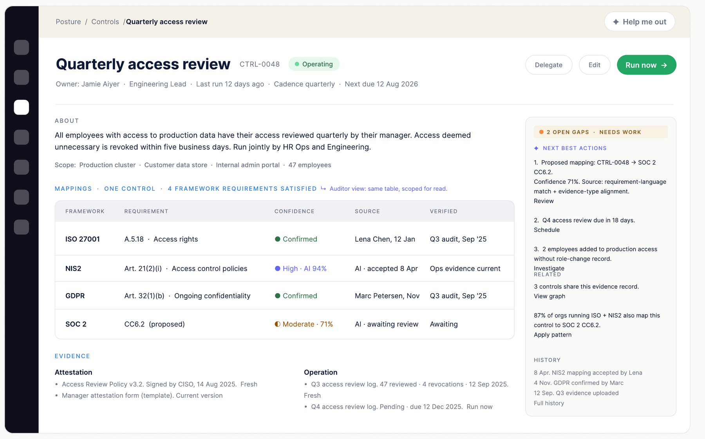
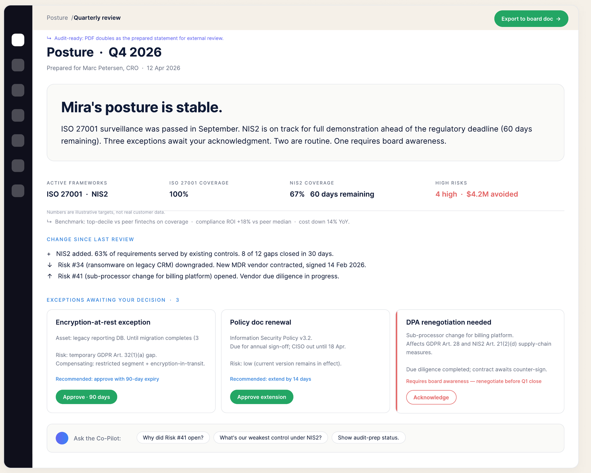
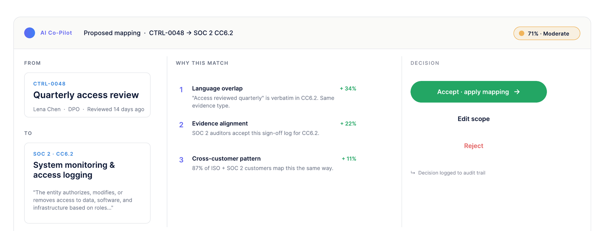

ComplianceBox: Map once. Comply many times.
A product concept for unifying security and compliance work. Companies juggling GDPR, ISO 27001, NIS2 and SOC 2 redo the same evidence collection for every framework. ComplianceBox is built on one shared model, so frameworks become lenses over work you've already done.
Adding a framework shouldn't mean redoing months of work
Customers don't have a Security problem or a Compliance problem. They have one shared body of work: assets, controls, evidence, risks. That body of work already serves multiple framework obligations. The platform's job is to make that reuse visible, not to recreate work per framework.
Today's tools don't behave this way. A mid-size company adding NIS2 to an existing ISO 27001 program typically restarts evidence collection from zero, even though most of what NIS2 asks for already exists, verified, in the ISO program.
Frameworks are lenses, not workspaces.
How the market handles multi-framework compliance
I audited the four dominant GRC platforms to understand how each structures multi-framework work, and where the structural gap is.
| Platform | Model | Strength | Where it breaks |
|---|---|---|---|
| Vanta | Per-framework workspaces with cross-mapping add-on | Fast SOC 2 onboarding; strong integrations | Each framework is its own project. Evidence duplicates across workspaces; adding a framework restarts collection. |
| Drata | Control library mapped per framework | Continuous monitoring; auditor network | Mappings are static templates, not records, with no author, confidence, or audit trail on the mapping itself. |
| OneTrust | Configurable enterprise modules | Breadth across privacy, GRC, ESG in one suite | Configurable but unlearnable. Operators need consultants to model their own program. |
| Secureframe | Framework checklists + evidence vault | Approachable for first-time compliance | Evidence vault is shared, but requirements aren't connected across frameworks, so reuse is manual. |
The structural gap
Every incumbent treats the framework as the organizing unit. None treats the customer's body of work as the unit and frameworks as views over it. That inversion is the bet.
What this drove
Three design decisions trace directly to this audit: a shared model over workspaces (vs. Vanta), mappings as first-class records (vs. Drata), and an opinionated default view (vs. OneTrust).
Three layers, one shared model
Frameworks sit on top as lenses. The shared model in the middle is collected once. Domain-specific concerns draw from it underneath. About 70% of the work is shared; the other 30% is genuinely domain-specific.
Security-leaning
Vulnerabilities · Threats · Incidents · Detections · Patches · Pen-test findings
Compliance-leaning
Frameworks · Audit findings · RoPA · DPAs · DSRs · Sub-processor register · Privacy notices
Evidence has two flavors
Signed (a policy that exists) and operating (a scan or log that works). Most tools conflate them. Splitting them lets one model serve frameworks with different burdens.
Mappings are records, not links
Each mapping carries author, timestamp, confidence, and source. The AI proposes; humans accept, edit, or reject. That's what makes the audit trail real.
Real cross-framework mappings, accurate citations
The 70% claim has to survive contact with the actual standards. A sample of the mapping work, one record satisfying requirements across three frameworks:
| Entity | Example | ISO 27001 | NIS2 | GDPR |
|---|---|---|---|---|
| Control | Quarterly access review | A.5.18 | Art. 21(2)(i) | Art. 32(1)(b) |
| Control | Encryption at rest for production data | A.8.24 | Art. 21(2)(h) | Art. 32(1)(a) |
| Control | Vendor risk assessment process | A.5.19, A.5.20 | Art. 21(2)(d) | Art. 28 |
| Evidence | MFA enrollment log (operation) | A.8.5 | Art. 21(2)(j) | Art. 32(1)(b) |
| Policy | Information security policy | A.5.1 | Art. 21(2)(a) | Art. 24 |
| Agreement | DPA with sub-processor | A.5.20 | Art. 21(2)(d) | Art. 28(3) |
| Event | Tabletop exercise | A.5.24 | Art. 21(2)(c) | implication of Art. 32 |
GDPR-only · the data-subject lifecycle
RoPA, DSRs, privacy notices. These belong to the data-subject lifecycle, not the shared compliance model. GDPR-specific obligations only.
Security-only · operational telemetry
Vulnerability scans and incident detections feed the shared model as operational evidence, but live in the Security lens. Not framework-mappable on their own.
Six promises the system must keep
One shared model
Assets, Controls, Evidence, Policies, Agreements, Risks, Mappings, Requirements. The same model serves every framework. Adding a framework adds Requirements, not a workspace.
Map once, comply many times
A Control or Evidence record satisfies 1 to N Requirements across multiple Frameworks. Mappings carry author, timestamp, confidence, and source.
Compute posture continuously
Compliance state reflects reality in real time. Evidence aging, expired certifications, and missing mappings change posture automatically.
Route work by ownership
Every Control, Policy, Agreement, and Program has an accountable Role. Tasks route to the right person, not a shared queue.
Adapt the view for each user
Operators see prioritized work and concrete next steps. Buyers see aggregated posture, change since last review, and decisions awaiting them.
Make AI traceable, audit-ready by default
Every AI proposal shows source and confidence, reviewable before commit. The audit trail is the same shared model, scoped for read. Auditors see what the operator wrote, what the AI proposed, and every override. No separate audit prep.
Two people, two views, one model
An Operator who does the work. A Buyer who reads the result. Same shared model, different goals, different decisions, different tools. Both work at Mira, a fictional 200-person EU fintech used to ground every scenario.
Lena Chen
"Adding a framework usually means redoing months of evidence collection. Why should NIS2 mean I redo what I already did for ISO?"
- Goals
- Demonstrate NIS2 Art. 21 in 90 days without redoing evidence; keep ISO 27001 continuously audit-ready; every AI suggestion traceable to a source
- Frustrations
- Auditors and the board want different things from the same data; AI suggestions she can't trace are worthless in compliance
Marc Petersen
"The board doesn't want compliance reports. They want to know where we stand vs peers and what we got for the spend. Tell me that, with the evidence to defend it."
- Goals
- Quarterly board readout in under 20 minutes' prep; approve exceptions with full context, not hope; defend the compliance investment
- Frustrations
- Dashboards that don't explain themselves; signing off on technical exceptions he can't fully validate
Operator and Buyer in motion
Lena onboards NIS2 across 90 days. Marc prepares the board readout in 13 minutes. Same model, two views, decisions flowing both ways.
Lena gets a NIS2 deadline notification, scopes the scan to Mira's EU entity, and waits four seconds. The system stages 47 high-confidence mappings against existing controls and evidence, with 63% of NIS2 already covered before she collects anything new. She bulk-accepts the high-confidence set, reviews 18 moderate matches with the AI's reasoning visible, and works three ranked gaps. The flow branches when reuse comes back low (AI suggests narrowing scope), when she disagrees with a proposal (rejection is logged; the model recalibrates), and when a gap is vendor-side (it routes to the risk register, off her queue).
NIS2 mapped using existing evidence. Zero new collection for 63% of requirements.
Marc lands on a written briefing, drafted overnight from events, not a dashboard. He skims "stable" plus key numbers, scans three change bullets, decides on three exception cards, drills into one ("Why did Risk #41 open?") via plain-language Q&A citing source events, and exports a clean board doc. Thirteen minutes. The journey also maps where Marc overrides the system: re-owning a degrading control, escalating an exception to the board, tightening an evidence-freshness SLA.
The auditor inherits everything
Every mapping carries author, timestamp, source. AI proposals and decisions are preserved. The board PDF doubles as the audit narrative: same shared model, scoped for read.
Decisions flow both ways
Operator rejections recalibrate the AI. Buyer overrides re-route operator work. The journeys aren't parallel tracks; they're one loop through the same model.
One control, four frameworks
CTRL-0048, Quarterly access review. Operated once, evidenced once, mapped to ISO 27001, NIS2, GDPR, with a proposed SOC 2 mapping awaiting review. The mappings table is the heart of the product: every row shows confidence, source, and verification status.

Operator view · control detail. Next-best actions ranked on the right; evidence split into attestation and operation.
Written, not dashboard
The Buyer reads a briefing, decides on exceptions, and exports a clean board document. Same product, a different shape on purpose. Buyers read; they don't scan.

Buyer view · quarterly readout. Plain-language posture, change since last review, three exception decisions with recommendations.
How AI earns trust here
Compliance is auditable by definition, so AI without source and confidence is unusable. Five patterns cover how the AI shows its work, how users trust it, and how they disagree with it.
01 · Confidence
Three bands, never one number. High (≥90%) is a bulk-accept candidate. Moderate (60 to 89%) gets review with reasoning. Low (<60%) surfaces as a gap, not a mapping.
02 · Traceability
Every proposal carries a four-part trail: source language matched verbatim, one-paragraph reasoning, confidence + band, and author = AI with timestamp.
03 · Review states
Proposed by AI → under human review → accepted/edited → rejected (the model learns). All states logged in the audit trail.
04 · The Buyer trusts
Plain English first, source events listed underneath, an "ask" affordance for deeper context. Marc can always read the raw source.
05 · The Operator disagrees
Reject with optional reason. Mapping not applied; the audit trail keeps the AI version; the model recalibrates on the next scan.
06 · The auditor inherits
The silent third user. The audit trail is the shared model scoped for read, not compiled separately at audit time. Full reasoning, source, and decisions intact.

Anatomy of an AI suggestion. The AI proposes with weighted reasoning; the human decides; the decision is logged.
What I chose, what I rejected, what ships first
A shared model over per-framework workspaces
Workspaces duplicate evidence and turn "add NIS2" into a project instead of a Tuesday.
Written briefing over executive dashboard
Buyers read; they don't scan. The briefing is drafted from events and exports as the board doc.
Inline AI with traceability over a side-panel chatbot
Opaque AI is unusable in compliance. Every proposal shows its work where the work happens.
A separate Compliance app · a maturity score · a posture donut · a configurable rules engine
One product, two lenses. Single-number scores hide the decisions that matter; configurability without opinion is how tools become unlearnable.
Phase 1: the smallest version that delivers the "map once" promise
Shared model + mappings as records + the operator's add-framework flow with AI-proposed mappings. Phase 2: the Buyer briefing, once posture has data to summarize.
Edge cases worth designing for
Framework requirement updates
Mappings flagged as drifted; surfaces as a re-mapping task, not silent staleness.
AI confidence below threshold
System requires explicit human approval; never auto-applies.
Certificate expiry mid-renewal
The model represents both "expired" and "in renewal." Real programs live in that gap.
Sub-processor failing audit
A Compliance event and a Security risk simultaneously. One record, two lenses.
How I'd measure it
Reuse ratio
Share of new-framework requirements satisfied by existing evidence on day one.
AI acceptance rate
High-confidence proposals accepted without edit. The trust signal.
Time to board readout
Posture-open to PDF export. The Buyer journey's 13-minute target, in practice.
Time to add a framework
Selection to first verified evidence. Counters the per-workspace baseline of months.
The data model is the design
The highest-leverage design decision here isn't a screen. It's evidence split into two flavors and mappings promoted to records. Every UI choice downstream got easier because the model was right.
In regulated domains, AI UX is provenance UX
Confidence bands, verbatim source matching, and preserved rejections aren't AI features. They're what makes AI admissible in a domain where every claim must survive an audit.